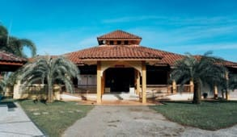
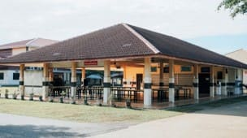
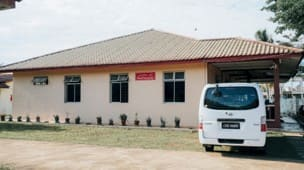
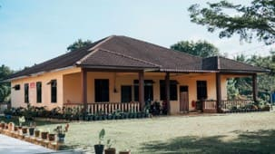
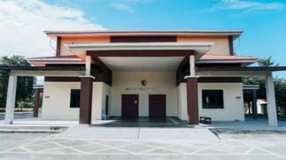
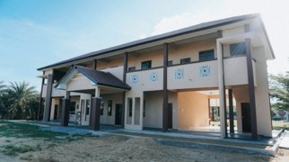

Our Progress
Since its establishment in 2004, Rumah Permata Camar has achieved significant milestones in providing care, education, and shelter for orphans and underprivileged children in Kuantan, Pahang.
Key Achievements
- ‣ 2004 – Officially began operations with 5 children
- ‣ 2006–2008 – Received land endowments totalling 4.36 acres
- ‣ 2014 – Registered as an independent welfare organisation
- ‣ 2024 – 32 children currently under care
- ‣ 2024 – Successfully nurtured over 150 former residents
Facility Development
Continuous development of facilities has enabled Rumah Permata Camar to provide a safe and comfortable living environment for its residents.
-  Surau An‑Nadwah (2008)
-  Dining Hall (2010)
-  Teratak Salehuddin (2012)
-  Teratak As‑Shariff (2015)
-  Dewan Permata Camar (2019)
-  Administration Block (2022)
Our Impact
The achievements of Rumah Permata Camar reflect the strong support from donors, volunteers, and the community. These contributions have played a vital role in shaping a brighter future for the children under our care.